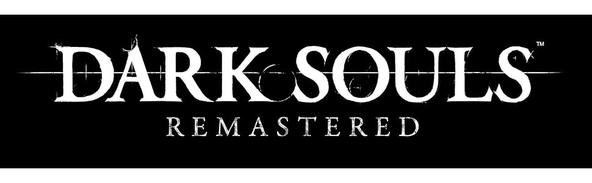

Bienvenidos
Bienvenido a mi página dedicada a Dark Souls. Acá vas a encontrar toda la historia del juego (Lore) resumida, información detallada sobre cada uno de los jefes, recomendaciones para tu aventura y todo lo que necesitas saber para sobrevivir en Lordran. ¡Espero que la disfrutes!
